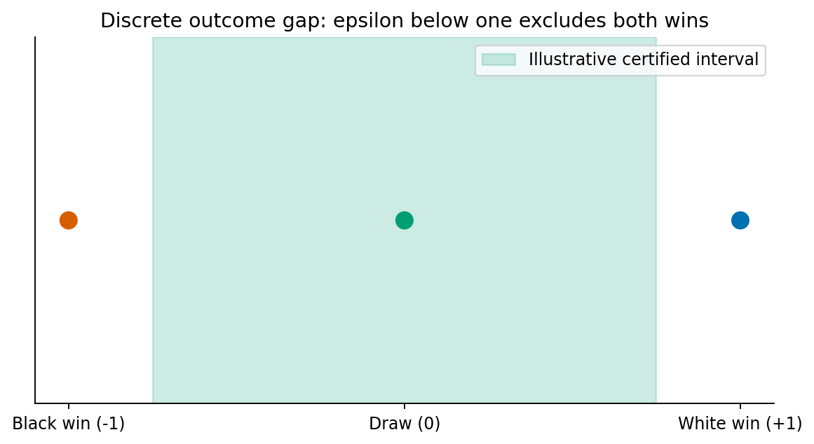
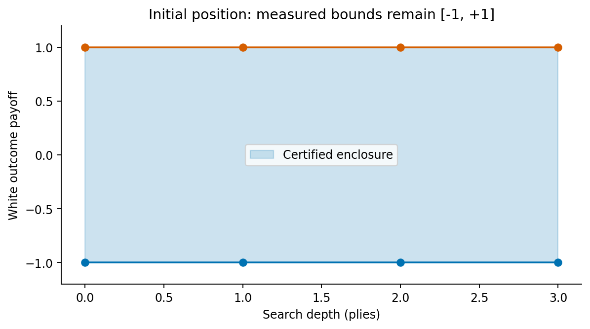

Magnum Chessicus
From the Stalemate Gambit to Certified Draws
Michael Emanuel Glover · Developed in dialogue with Codex · 4 October 2026
The certified-draw theorem
If sound bounds place chess’s minimax value strictly between −1 and +1 in terminal-outcome units, its discrete value must be 0: a draw. The theorem is proved; initial-position certificates satisfying its premises have not been produced.
Completed computations
Exhaustive interval search through three plies; legal mate-in-one, stalemate and kings-only fixtures; exact Fool’s Mate path probability; repetition-history checks; three small replayed certificates and a rejected corrupted witness. Archived Relaxfish diagnostics are preserved separately.

